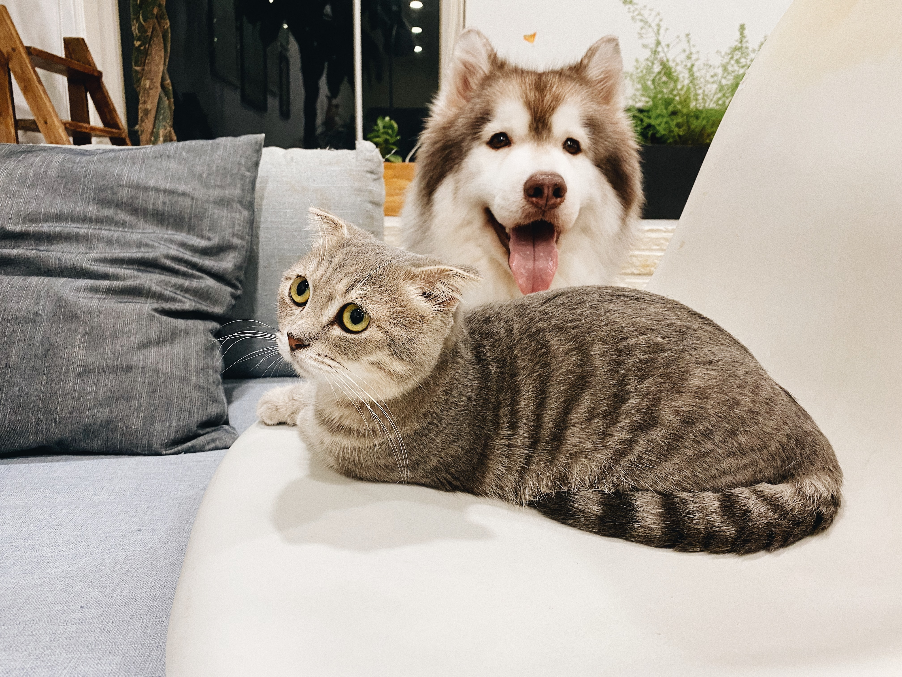

Welcome to my Student Web page! Here, you'll find some basic information about the creator of this site - his hobbies and interest and maybe more. Who knows?
- My Intersets
- Music production - yeah, I make music. Surprising right? Not really? Well yeah, I do. My first release was The Beyond. Check it out and enjoy.
- Anime: Yes, I enjoy watching anime. Do I look like it? No? Anyhow, anime I like include Jujutsu Kaisen, Demon Slayer, Marshle: Magic and Muscle, etc.
- Reading manhwa, manga and webtoons.
- Playing soccer as well
- Listening to music
- Taking walks
- Taking naps. Sleep is essential
- I like pets. 